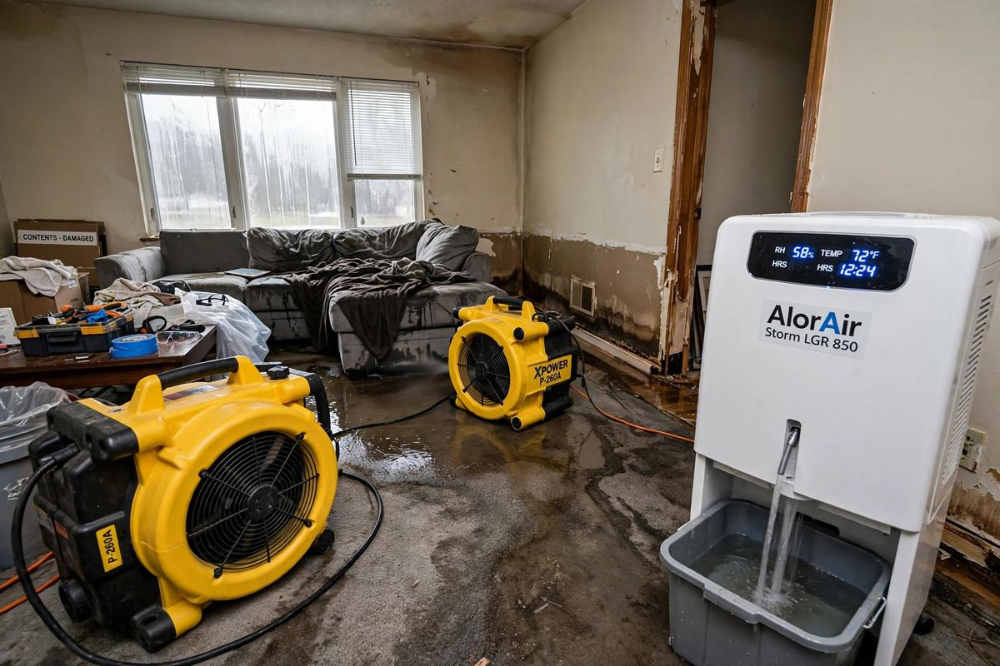

Commercial Water Damage Restoration Companies in Boise: How to Choose One
For a commercial building in Boise, the right restoration company is the one that can do four things at once: stop the water fast, dry the building to verified moisture levels, document everything your insurer will ask for, and keep your business running while the work happens.
- Response time first, not price
- Drying verified by moisture readings
- Documentation your insurer needs

The short answer
For a commercial building in Boise, the right restoration company is the one that can do four things at once: stop the water fast, dry the building to verified moisture levels, document everything your insurer will ask for, and keep your business running while the work happens. No published Boise-only ranking of commercial restoration companies exists, so any page that gives you a numbered “best of Boise” list is guessing — this guide tells you how to judge companies yourself, instead of asking you to trust a ranking nobody verified.
Start with response time and scope, not price. A company that arrives hours late costs more in damage than a company that charges more per hour and arrives in time. Then check the five things below: commercial experience, drying and monitoring method, documentation, insurance process, and what happens after the drying — because water damage that is not fully dried becomes a mold job next.
If your building has standing water, a burst pipe, or a roof leak that is still coming in, call (321) 985-3339 now and tell us where the water is and whether it is still spreading. Stopping it comes before choosing a vendor.
Water coming in right now? Tell us where the water is and whether it is still spreading. Stopping it comes before choosing a vendor.
Why commercial jobs are different from a house flood
A home job and a commercial job share the same physics — water spreads, materials soak, mold follows if drying is slow — but the stakes and the logistics are different:
| Factor | Home job | Commercial job |
|---|---|---|
| Who is affected | One household | Tenants, employees, customers, or all three |
| Downtime cost | Inconvenience | Lost revenue for every day a space is closed |
| Space | One or a few rooms | Multiple floors, units, or a whole building |
| Systems involved | Usually one leak source | Plumbing, roofing, HVAC, fire suppression, electrical |
| Documentation | Photos for one claim | Photos, moisture logs, and scope notes for an insurer, a landlord, and sometimes tenants |
| Access | Owner lets the crew in | Keys, security, business hours, and tenant notice all need coordinating |
That is why “we do water damage” is not enough for a commercial building. Ask whether the company has handled buildings like yours — offices, retail, warehouses, multi-unit properties — and what happened to the business operations while the work was going on. A company that only talks about drying equipment and never asks about your tenants or opening hours has not thought about the commercial part of the job.
What to check before you hire
Use this as a checklist on the first call, not after the crew arrives:
1. Response time, honestly stated. Ask how fast a crew can actually reach your building in Boise, and what happens if the call comes at night or on a weekend. A vague “we respond fast” is not an answer. A real answer names a time window and what the first visit covers: stop the source, extract standing water, and start drying.
2. Commercial scope, in writing. The scope should name the affected areas, the water category (clean, grey, or contaminated — this decides what can be saved and what must go), the drying plan, and what is excluded. If rebuild, plumbing repair, or roofing is excluded, that should be written down, not discovered later.
3. Drying method and moisture verification. Drying is not “fans for a few days.” A proper job uses air movers and dehumidifiers sized to the space, and moisture meters to verify that framing, drywall, and flooring actually reached target moisture levels before equipment is pulled. Ask how they prove the building is dry. If the answer is “it feels dry,” that is not verification.
4. Documentation you can hand to an insurer. Photos before, during, and after; moisture readings over time; a list of materials removed; and an itemised scope. Commercial claims stall most often on missing documentation, not on the damage itself. Ask what packet you will receive at the end of the job.
5. Mold prevention, not just water removal. The U.S. Environmental Protection Agency (EPA) advises drying wet materials within 24 to 48 hours to help prevent mold growth. A restoration company should be able to tell you what happens if that window is already missed — usually that means checking for mold growth and, if it is present, a separate remediation scope. Water work and mold work are related, but they are not the same job, and they should not be blurred into one vague quote.
6. Business continuity. Can the work be phased so part of the building stays open? Can noisy work happen after hours? Who coordinates with tenants? These questions sound secondary until a crew blocks your entrance on a trading day.
If a company cannot answer most of these on the first call, keep calling. The cheapest quote from a company that cannot document the job is the most expensive outcome once the claim is filed.
What a commercial restoration job actually involves, phase by phase
| Phase | What happens | Why it matters commercially |
|---|---|---|
| Emergency response | Source stopped, standing water extracted, safety hazards checked | Every hour of standing water widens the damage and the claim |
| Assessment and scope | Affected areas mapped, water category set, moisture readings taken | This scope is what the insurer pays against — gaps here become disputes later |
| Drying and dehumidification | Air movers and dehumidifiers run, moisture monitored daily | Proves the building is dry; skipping verification is how mold returns |
| Removal | Soaked drywall, insulation, carpet pad, and unsalvageable materials come out | Contaminated material left in place keeps feeding mold and odour |
| Cleaning and sanitising | Affected surfaces cleaned; contaminated water jobs need stricter handling | Grey and contaminated water are not cleaned like a clean-water leak |
| Verification | Final moisture readings and, where needed, mold checks | The handover point: the building is dry, documented, and ready for rebuild |
| Rebuild | Drywall, flooring, and finishes restored | Usually a separate scope and schedule, priced after verification |
Rebuild deserves a direct question: is it included, or does a separate contractor handle it after drying? Either arrangement can work, but it must be clear before work starts, because the gap between “dry” and “open for business” is where commercial timelines slip.

The insurance question to settle on day one
Commercial water claims involve more parties than a home claim: the building owner, the tenant (if any), the insurer, and sometimes a property manager. Before work starts, settle three things:
- Who is the named contact for the claim, and who receives the documentation packet?
- What the policy covers — sudden pipe bursts and storm damage are usually treated differently from slow leaks or maintenance failures, and that distinction decides what gets paid.
- What the restoration company will and will not do with the insurer — some companies bill the insurer directly, others bill you and you claim back. Neither is wrong, but you should know which one you are signing.
Keep your own photo record too, from the first hour if it is safe to do so. The company’s documentation and yours should tell the same story.
If you are unsure whether your situation is a water job, a mold job, or both, read how a proper water damage restoration job runs, and what happens when wet materials are left long enough to need mold remediation.
Red flags
- A fixed price or fixed day count before anyone has seen the building or taken a moisture reading.
- No moisture readings, no documentation packet, and no written scope — just a verbal promise.
- Pressure to sign a full assignment-of-benefits or open-ended authorisation before the scope is written.
- Drying equipment removed on a schedule (“three days, then we collect”) rather than on moisture readings.
- No answer on who handles rebuild, or rebuild promised as “included” with no separate line for it.
- A “best company” claim with no evidence behind it — the same standard applies to this page: we are not ranking companies here, because no verified Boise commercial ranking exists to rank from.
What about Boise specifically?
Here is the honest part, same as the cost and timeline posts: there is no published Boise-only commercial restoration ranking, and no published Boise-only commercial price list, so this post gives you neither. Boise commercial jobs follow the same phase sequence as anywhere else, with two local factors worth asking about: older downtown and historic buildings, where water travels through shared walls and older assemblies in ways a single-room scope misses; and Treasure Valley basements and ground-floor commercial spaces, where grading, irrigation, and seasonal moisture can be the real source behind a “mystery” leak. Your exact scope still comes from an assessment of your building, not from a table.
If a company promises a commercial timeline or price for your building before seeing it, ask what happens if hidden saturation is found, or if drying runs past the first estimate. A scope with no room for either is not a real scope.
Conclusion
The best commercial water damage restoration company in Boise is not a name on a list — it is the company that answers the hard questions on the first call: how fast it can reach you, how it proves the building is dry, what documentation your insurer will receive, and how your business keeps running while the work happens. Judge on response, scope, verification, and documentation, and you will filter out most bad outcomes before any crew arrives.
Do not buy on the fastest promise or the lowest number. Buy on scope: stop the water, dry to verified moisture levels, document everything, and hand the building back dry and ready for rebuild. That is what makes a commercial job real instead of optimistic.
If your building has water coming in now, call (321) 985-3339. Tell us where the water is, whether it is still spreading, and whether tenants or customers are affected. We will tell you what the next step should be, and whether you need an emergency response or a straight assessment first.
Common questions
What is the first thing to do after commercial water damage?
Stop the source if it is safe to do so, then get standing water out and drying started. The EPA advises drying wet materials within 24 to 48 hours to help prevent mold growth, so the first hours matter more than the rest of the schedule. Take photos from the start if it is safe.
How long does commercial water damage restoration take?
It depends on the size of the affected area, how long materials stayed wet, and whether rebuild is included. Drying alone is typically measured in days and verified with moisture readings, not a fixed calendar promise. A scope given before anyone has taken readings is a guess, not a timeline.
Is commercial restoration different from residential restoration?
Yes, mainly in scale and coordination: multiple units or floors, tenants and business operations to work around, more systems involved, and heavier documentation for insurers, landlords, and tenants. The drying physics are the same; the project management is not.
Does insurance cover commercial water damage in Idaho?
It depends on the cause and the policy. Sudden events like a burst pipe are usually treated differently from slow leaks or maintenance failures. Settle who the claim contact is, what the policy covers, and how billing works before work starts, and keep your own photo record alongside the company's documentation.
What should a restoration quote include?
The affected areas, the water category, the drying plan, what materials will be removed, what documentation you will receive, and what is excluded — especially whether rebuild is included or separate. A quote without a written scope is not something to sign.
Why is moisture verification important?
Because a building that looks dry can still hold moisture in framing, drywall, or flooring, and that moisture is what lets mold grow after the crew leaves. Verification means moisture meter readings showing target levels were reached, not just that fans ran for a set number of days.